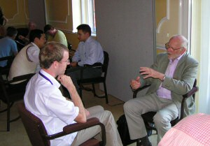

Speed Dating
At TAIC PART a session was held to spark new collaboration between attendees in the style of "speed dating". The room was arranged with two circles of chairs, with an inner circle for academics, and an outer circle for industrialists and PhD students, so that two sets of people were facing one another.
The industrialist/PhD student was given a few minutes to explain a testing problem in their work. The academic was then given a few minutes to explain his or her area or research. Finally, the industrialist/PhD student and academic discussed how they might collaborate to solve the problem. If a collaboration looked promising, the participants agreed to exchange business cards, in order to take discussions further at a later date.
Academics then moved seats around the room in order for discussions to begin between different attendees.
We recorded some paragraphs of potential collaboration here:
Neil Walkinshaw (University of Sheffield) and Sigrid Eldh (Ericsson)
Topic: Reverse Engineering State Machines from Source Code
Our project aims to reverse-engineer state machines from source code. The novelty of our approach lies in identifying those statements of source code that govern each transition (which we refer to as the `transition function'). Relevant statements are identified by symbolically executing the system, and using it to record those branches of source code that are executed with respect to a particular state transition. Our approach can only be deemed a success if it (a) scales to large `industrial' projects and (b) state transition functions are indeed useful for debugging and understanding state machine implementations. To establish this, we require a substantial, industrial system. Sigrid Eldh has suggested that we can use a software component for an Ericsson telecoms system as a case study. Because it is representative of a mature, substantial industrial product, it would enable us to effectively gauge its feasibility.
Steve Counsell (Brunel University) and Jeremy Gardiner (Cranfield University)
Topic: Metrics for Sofware Reliability, Robustness via Random and Robustness Testing
High Volume Automated Testing techniques such as random (stochastic) testing and penetration (robustness) testing may allow measurement of software reliability and robustness. In addition, a hybrid testing approach using elements of both techniques may allow measurement of fault tolerance. Reliability is defined as the ability of a system or component to perform its required functions under stated conditions for a specified period of time; commonly used measures of reliability of a software system or component are Mean Time To Failure (MTTF), Mean Time Between Failures (MTBF) and Availability. The overall reliability of a software system or component is a combination of both stability and correctness contributions, where stability is defined as the tendency or otherwise of a system or program to crash, and correctness is defined as the degree to which software conforms to its specification. Robustness is defined as the degree to which a system or component can function correctly in the presence of invalid inputs. A fault tolerant system or component is able to continue normal operation despite the presence of faults. This collaborative research will employ methods of empirical validation, Grounded Theory, theoretical validation, and comparison with traditional metrics. The expected contributions of the research are the development of measurement techniques and metrics for software reliability, robustness and fault tolerance that can be used to characterise software components.
Rob Hierons (Brunel University) and Rishabh Gupta (Motorola)
Topic: Defect and cost prediction
If we can predict where defects will occur and their impact then we can direct testing in order to make it more effective and we can make more informed release decisions. Motorola have developed an approach for defect prediction based on Bayesian Networks. While this has proved to be accurate, the use of more than one method could make the predictions more robust. Researchers at Brunel University have used case based reasoning for both cost and defect prediction. The proposal is to first apply Case-Based reasoning techniques for defect prediction, and possibly also cost prediction, using Motorola data. The research will then investigate how the predictions from Bayesian Networks and Case-Based reasoning can be combined.
Rob Hierons (Brunel University) and Harmen Sthamer (DaimlerChrysler)
Topic: State-based testing
Metaheuristic algorithms have been successfully applied to the generation of test cases that cover parts of the code. However, there has been very little work on generating test sequences from a specifications or design. The proposed research will investigate the use of metaheuristic algorithms to generate test sequences from a model written in a language such as statecharts or SDL. The aim will be to automatically produce test sequences that 'cover' the model and will consider several forms of coverage (such as executing every transition). It will also investigate how testing may use information derived from both a statechart or SDL model and the structure of the code. For example, state information in the model might prove valuable in the generation of test cases to cover the code: it may be necessary to reach a particular state of the model before parts of the code can be covered.
Rob Hierons (Brunel University) and Sigrid Eldh (Ericsson)
Topic: Comparing test techniques
Despite many test techniques having been defined and used in practice, little is known about the relative effectiveness and efficiency of these techniques. This research will explore the performance of test techniques within the telecommunications domain. While focussing on one application domain will restrict the generality of any results, it is anticipated that many interesting properties of testing will be domain specific and that such properties can only be discovered by investigating a single application domain.
Rob Hierons (Brunel University) and Rob Thomson (Motorola)
Topic: Testing from Message Sequence Charts (MSCs)
This work will consider two main problems. The first relates to the representation and analysis of MSCs. Where an MSC contains alternatives, the generation of a tree representation can lead to a combinatorial explosion. In such cases, we need a new representation and algorithms that manipulate descriptions written in such a notation. The second problem relates to regression testing and the well known problem of reusing test cases when interfaces have changes. The problem is: can we utilize information contained in a set of MSC in order to aid in the repair of a regression test suite when changes are made to interfaces.
Rob Hierons (Brunel University) and Joachim Wegener (DaimlerChrysler)
Topic: The ordering of adaptive/TTCN-3 test cases
Recent research has showed that the cost of applying a set of adaptive/TTCN-3 test cases depends on the order in which they are applied. Initial results have been produced for deterministic implementations [1,3] and non-deterministic implementations [2]. However, this previous work only considered simplified versions of TTCN-3 test cases. The proposed research will investigate a wider range of TTCN-3 test cases: for example, it will consider test cases that contain loops, have timing constraints, and are distributed. In addition, it will develop new algorithms for ordering a test suite and evaluate these algorithms on real test suites.
[1] R.M. Hierons and H. Ural, Reducing the cost of applying adaptive test cases, Computer Networks (to appear).
[2] R. M. Hierons, 2006, Applying adaptive test cases to nondeterministic implementations, Information Processing Letters, 98 2, pp. 56-60.
[3] R.M. Hierons and H. Ural, 2003, Concerning the ordering of adaptive test sequences, 23rd IFIP International Conference on Formal Techniques for Networked and Distributed Systems (FORTE 2003), Berlin, 29 September-2 October 2003, LNCS volume 2767, pp. 289-302 (won Best Paper Award).
Phil McMinn (University of Sheffield) and Harmen Sthamer (DaimlerChrysler)
Topic: Automatic test data generation
Automatic test data generation using search techniques [1] is still being hampered for test objects at DaimlerChrysler by awkward programmatic features which result in a lack of guidance to the search. Recent work by McMinn et al. [2] has looked deeper into solving this problem for a wide class of search-guidance problems for test data generation. The proposed collaboration is try these techniques on test objects from DaimlerChrysler in order to alleviate their testing problems and to strengthen the methods proposed for solving them.
[1] P. McMinn Search-Based Software Test Data Generation: A Survey. Software Testing, Verification and Reliability, 14(2), pp. 105-156, 2004.
[2] P. McMinn, M. Harman, D. Binkley, P. Tonella The Species per Path Approach to Search-Based Software Test Data Generation. Proceedings of the International Symposium on Software Testing and Analysis (ISSTA 2006), Portland, ME, USA, July 17-20, 2006, pp. 13-24.
Phil McMinn (University of Sheffield) and Rishabh Gupta (Motorola)
Topic: Combining Fault Prediction with Search-Based Testing
If we can predict the source code files that are more likely to contain faults, it makes sense that the code in those files is tested more intensively. Thus this information could feed into information used by search-based techniques for test-case prioritization [1]. The faults might be automatically exposed using automatic test data generation techniques [2], however this may require a tighter coupling between specifications and code, or more information about the types of faults which are likely to occur.
[1] Kristen R. Walcott, Mary Lou Soffa, Gregory M. Kapfhammer, and Robert S. Roos. Time-Aware Test Suite Prioritization. In the Proceedings of the ACM SIGSOFT/SIGPLAN International Symposium on Software Testing and Analysis, Portland, Maine, July 2006.
[2] P. McMinn Search-Based Software Test Data Generation: A Survey. Software Testing, Verification and Reliability, 14(2), pp. 105-156, 2004.